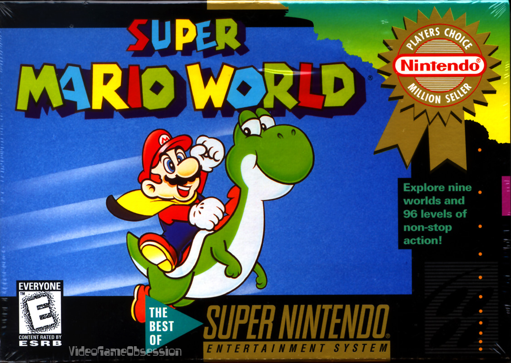

Block! Hexa is a fun puzzle-solving game. The player is given several different shapes
to place on the screen and match the image. This mobile app game has several levels of difficulty. I was addicted to this game in five minutes! Premise: Place the blocks to form the image on the screen.
Pros: A good variety of levels and difficulty. You earn hints as you progress through the levels. This can help solve some of the more difficult puzzles. Cons: The free version contains several
ads. With the completion of each level, another ad pops up. However, the creator does have to make money somehow.
Final verdict: 5/5
Final Fantasy 7
Final Fantasy 7 is one of my all-time favorite role playing games. FF7 is not a game that is easily beaten. Choosing the right team members is crucial in some spots. Premise: You are Cloud, an ex soldier.
The main character sets out to save the planet from destruction and find his true identity.
Pros: There is plenty of fun interactions between the character and the main player.
Cons: Some of the summon spells are a bit too long. For example, supernova (Sephiroth's summon)
takes some time for the entire animation to play through. It is too bad these animations could not be skipped, at least not on the Playstation version.
Final verdict: 5/5
Resident Evil 2
Resident Evil 2 is a funtastic game! One scene literally had me jumping up from my seat. The game provides the player with a bit of exploration through Racoon City as opposed to the first game
in which the player is stuck inside the mansion.
Premise: Leon and Chris Redfield's sister, Claire, must stop a zombie invasion that has taken over Racoon City.
Pros: The game has different endings depending on which part of the game you play first. RE2 is fun to play!
Cons: The camera shots are sometimes cumbersome yet it provides an added depth of not knowing what lies behind each corner.
Final verdict: 5/5
Super Metroid
Super Metroid is a fun side scroller that challenges the player to exploit enemy weaknesses and
manage their way through the labyrinth of corridors through the space station. The gameplay is entertaining while requiring the player to solve challenges throughout the station. Premise: Samus is sent to investigate
a space station due to a loss of contact with the station.
Pros: Fun gameplay. Challenging missions. The weaponry and abilities make this game stand out from the rest.
Cons: There has not been a Metroid game of this magnitude since the SNES.
Final verdict: 5/5

Super Mario World
This is the cash-cow for Nintendo. The highly-anticipated Mario game for the Nintendo Switch
launches later this year. However, Super Mario World is an all-time classic! Plenty of levels to explore and Yoshi! If you do not enjoy a good game, this title is definitely not for you.
Premise: You play a plumber, Mario, who must save Princess Toadstool from the clutches of Bowser. Several castles lie between you and Bowser. Defeat each boss until Mario reaches
the end and saves the Princess!
Pros: There are numerous reasons I enjoy this title! The replayability factor is high.
I played this game for hours on end with a friend.
Cons: Some of the parts of the game can require a good degree of skill. It's Mario! What did you expect?